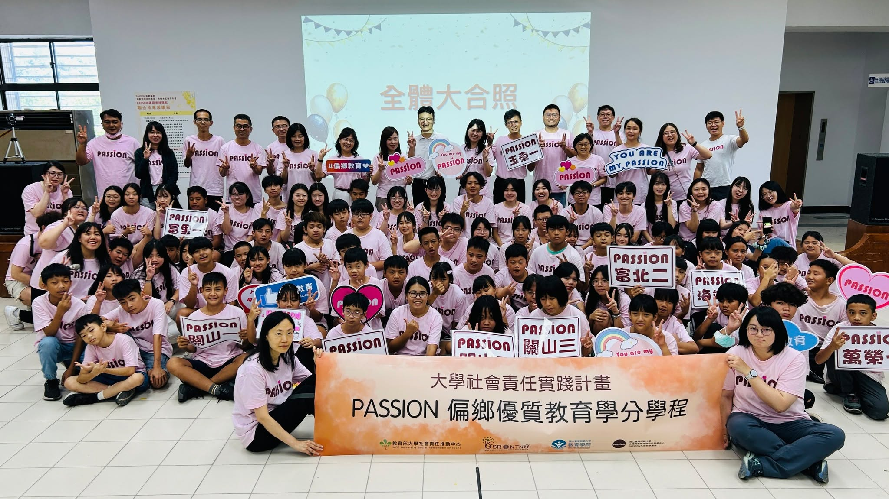

適性診斷
以國文閱讀、英語、數學與華語文等診斷工具，掌握學生的能力起點與學習盲點。
從適性診斷、篩選分流，到教材教法、教師培育與長期陪伴， PASSION 將大學的研發能量轉化為學校現場可實踐、可延續的教育支持。

PASSION 的核心不是單一活動，而是一套從診斷到教學、從人才培育到現場支持的完整系統。 團隊以三個連續步驟掌握學生需求，再透過三軌協作把專業穩定帶進教育現場。
以國文閱讀、英語、數學與華語文等診斷工具，掌握學生的能力起點與學習盲點。
依據診斷結果安排適切的學習起點與分組，讓教學回應學生真實的能力差異。
串接教材教法、教師增能、觀議課與教學回饋，讓支持持續發生在課堂現場。
「最新消息」保留招生、報名、說明會與活動預告； 已經發生的教學、服務與交流，則完整收進「活動紀實」。
PASSION 自 2016 年成立，從偏鄉學習扶助出發，逐步發展學分學程、暑期與遠距實習、 跨組織合作及國際教育服務。網站將這段歷程拆成大事紀、媒體報導與獎項肯定， 讓每一項成果都能回到可追溯的脈絡。
於國立臺灣師範大學心理與教育測驗研究發展中心成立。
全國首創 PASSION 偏鄉優質教育學分學程。
開辦暑期實習與遠距教學實習，建立持續陪伴機制。
持續擴大偏鄉教育、人才培育與跨域合作的實踐網絡。
從診斷測驗、數位教學平台到教材資源，PASSION 將研發成果整理成可直接進入教學現場的支持工具。
PASSION 偏鄉優質教育學分學程結合理論、教材教法、暑期實習與長期遠距教學， 讓大學生在真實教育現場中累積教學能力，也讓偏鄉獲得穩定而持續的專業支持。